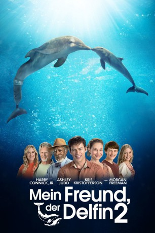

#6140 Mein Freund, der Delfin 2
Alternativ: Dolphin Tale 2
 
 IMDB-Wertung: 6.4 / 10
IMDB-Wertung: 6.4 / 10  Metascore: 0
Metascore: 0 
Vor einigen Jahren hat der Junge Sawyer Nelson zusammen mit Freundin Hazel und dem Team von Dr. Clay Haskett am Clearwater Marine Hospital das Delfin-Weibchen Winter gerettet, das seither in dem Aquarium lebt. Doch nach dem Tod ihrer Artgenossin Panama muss schnell neue Gesellschaft für Winter her, denn Delfine dürfen nicht isoliert gehalten werden. Als mit der gestrandeten Hope tatsächlich ein Delfin-Neuzugang in den Park kommt, scheint Winter gerettet. Doch es ist nicht sicher, ob die beiden Tiere auch wirklich gut miteinander auskommen werden. Winter unterscheidet sich schließlich von anderen Delfinen und schwimmt seit ihrer Rettung mit Hilfe einer Flossenprothese, die Dr. Cameron McCarthy extra für sie entworfen hat. Wird Winter von Hope dennoch akzeptiert werden?
Jahr: 2014
Dauer: 107 Minuten
FSK: 0
Land: USA Studio: Warner Bros.Tonspuren: DD5.1 - ,
Untertitel: Deutsch,
Auflösung: 1080p (1920x1080) Größe: 7874 MB
Genre: Drama, Familie
Regisseur: Charles Martin Smith
Drehbuch: Isaac Asimov
Soundtrack:
Darsteller:
 Ashley Judd als Lorraine Nelson
Ashley Judd als Lorraine Nelson Morgan Freeman als Dr. Cameron McCarthy
Morgan Freeman als Dr. Cameron McCarthy Kris Kristofferson als Reed Haskett
Kris Kristofferson als Reed Haskett Harry Connick Jr. als Dr. Clay Haskett
Harry Connick Jr. als Dr. Clay Haskett Austin Stowell als Kyle Connellan
Austin Stowell als Kyle Connellan- Juliana Harkavy als Rebecca
- Austin Highsmith als Phoebe
 Nathan Gamble als Sawyer Nelson
Nathan Gamble als Sawyer Nelson Charles Martin Smith als George Hughes
Charles Martin Smith als George Hughes- Cozi Zuehlsdorff als Hazel Haskett
 Carlos Gómez als Dr. Aslan
Carlos Gómez als Dr. Aslan Tom Nowicki als Phillip J Hordern
Tom Nowicki als Phillip J Hordern- Bethany Hamilton als Herself
- Cayla Brady als Clearwater Marine Volunteer
 Denis Arndt als Dennis
Denis Arndt als Dennis- Taylor Blackwell als Susie
- Gail Soltys als Gail
- Tom Ohmer als Board Member
- Alana Cavanaugh als Toddler
- Lauren O'Quinn als Tourist Woman
 Jim R. Coleman als Pat
Jim R. Coleman als Pat- Tamara Austin als Nurse's Aide
- Denisea Wilson als Julia
- Raheem Babalola als Steve
- Julia Jordan als Mandy
- Betsy Landin als Kat
 Tom Hillmann als Mel Prince
Tom Hillmann als Mel Prince- Aaron Quick Nelson als CMA Volunteer
- Amy Jordan als Mandy and Troy's Mom
- Kim Ostrenko als Alyce Connelan
- Malcolm Modele als Tourist
- Winter als Winter
- Kevin Tyler Moody als Clearwater Marine Volunteer
- Ashley Nicole als Beach girl
- Adrianne Walsh als Board Member
- Hope als Hope
- Cassie Livingston als Volunteer #2
- Lee Karlinsky als Troy
- Amy Fox als Print Reporter
- Thia Marie Sandefur als Aquarium Visitor
- Madison Absher als Volunteer
- Autumn Klein als Skipping Girl #1
- Carinne Julien als CMA Volunteer
- Jessica Braswell als Beach Girl
 Bradley Bowen als Tourist Man , uncredited
Bradley Bowen als Tourist Man , uncredited- Megan Ashley Brown als CMA Teenage Volunteer , uncredited
- Kelly Colbourne als Tourist , uncredited
- Carlyn Cosby-Phillips als Aquarium Tourist , uncredited
 Christopher De Stefano als Tourist , uncredited
Christopher De Stefano als Tourist , uncredited- Andrew Durliat als Lifeguard / Beach Goer , uncredited
Datei: X:\2-Dilogie(G-M)\Mein Freund, der Delfin\Mein Freund, der Delfin 2 (2014, FSK0, 1920x1080).mkv seit 05.05.2017
Festplatte: HD Collection-2(A-Z)-3(A-M)
 Alle Filme aus Gruppe '2-Dilogie(G-M)\Mein Freund, der Delfin'
Alle Filme aus Gruppe '2-Dilogie(G-M)\Mein Freund, der Delfin'